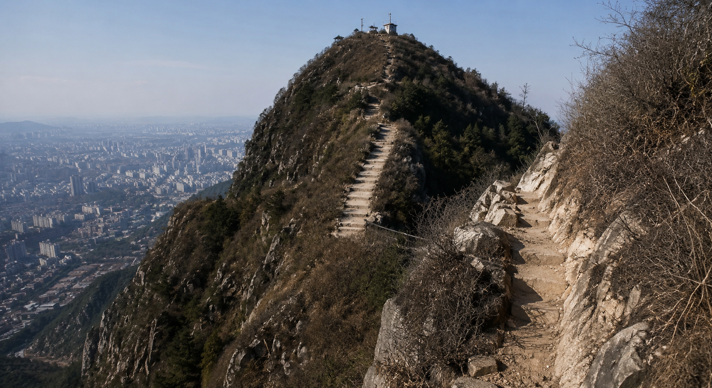
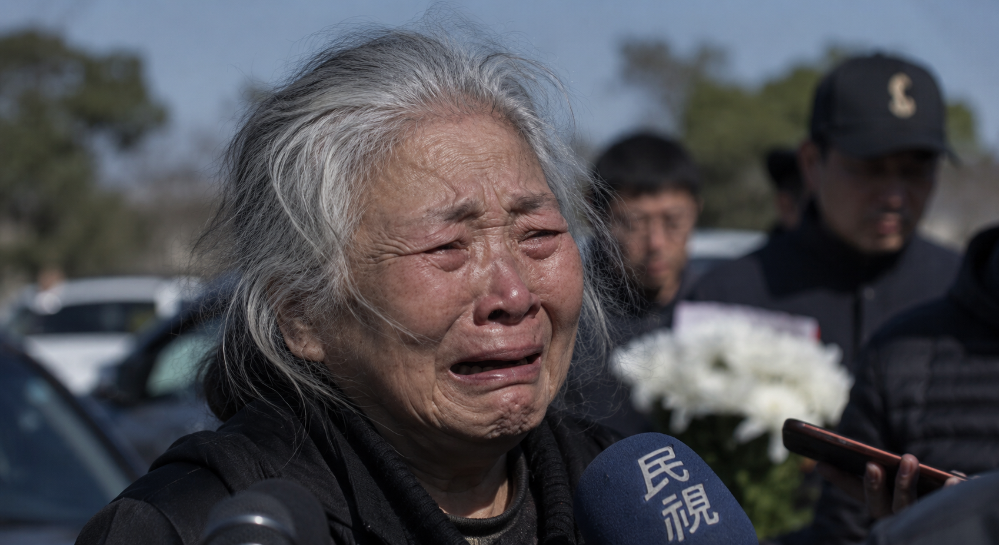

本报记者讯
九章山再传噩耗！年轻男子无保护攀爬险峰，失足坠落不幸身亡
近日，九章山发生一起令人痛心的坠崖事故。一名年轻男子在攀登途中不慎从陡峭路段跌落，经救援人员确认，已无生命迹象。
据了解，遇难者名叫李俊鸿。事发当天，他独自前往九章山攀爬。根据现场遗留的物品以及救援人员的初步判断，李俊鸿在登山过程中并未携带足够的专业防护装备，也没有使用安全绳、头盔等必要设施。

九章山部分区域山势险峻，尤其是接近山顶的一段陡坡，岩壁湿滑、落差较大，即使是经验丰富的登山者，也需要借助专业装备谨慎通行。
然而，李俊鸿在攀爬至整条路线最为陡峭的路段时，疑似因脚下岩石松动而突然失去平衡，随后从山坡边缘跌落。附近登山者听到声响后立即报警，但由于事发地点地形复杂，救援人员花费了较长时间才抵达坠落区域。
遗憾的是，当救援人员找到李俊鸿时，他已经失去生命体征。
“我已经失去了一个儿子，为什么又是他……”
记者随后联系到了李俊鸿的母亲。电话接通后，她长时间无法完整说出一句话，只能不断地哭泣。
在稍微平复情绪后，她哽咽着说道：
“我到现在都不敢相信这是真的。他弟弟离开以后，我每天都告诉自己，至少俊鸿还在，我还有一个儿子。可是现在，连他也走了……”
李俊鸿的母亲表示，弟弟离世后，李俊鸿一直很少在家人面前提起自己的情绪。表面上，他仍然像过去一样生活、工作，也会安慰母亲，但家人能够感觉到，他始终没有真正从失去弟弟的悲痛中走出来。
“他总说自己没事，让我不要担心。早知道会发生这样的事情，我无论如何都不会让他一个人去爬山。”

说到这里，她再次失声痛哭，并反复询问：“为什么偏偏又是我的孩子？”
目前，相关部门仍在对事故的具体经过进行调查。救援人员也再次提醒，九章山部分区域尚未设置完善的安全设施，攀登者切勿独自进入危险路段，更不能在缺乏专业装备和保护措施的情况下冒险攀爬。
弟弟离世的伤痛尚未消散，哥哥又在山中意外身亡。接连失去两个孩子，对于任何一位母亲而言，都是难以承受的打击。
一场原本普通的登山行程，最终成为了这个家庭无法醒来的噩梦。如今，只剩下一位母亲独自面对空荡荡的家，以及两场永远无法弥补的离别。
令人惋惜的不只是一个年轻生命的逝去，更是这个本就支离破碎的家庭，再一次被命运夺走了最后的依靠。